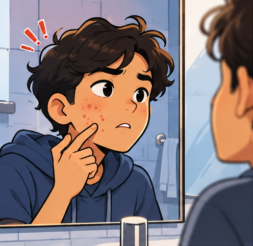
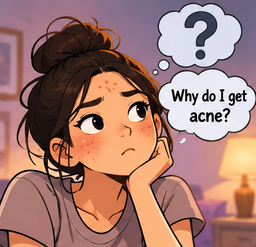
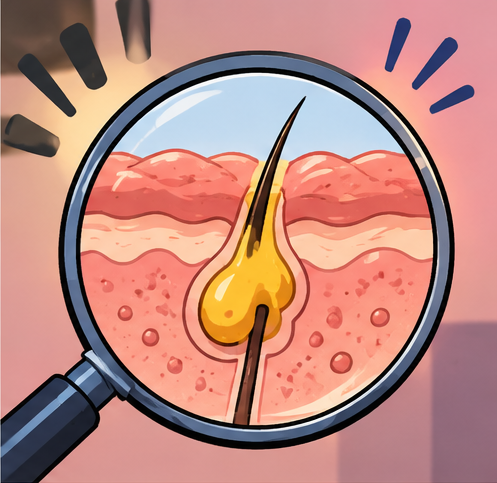
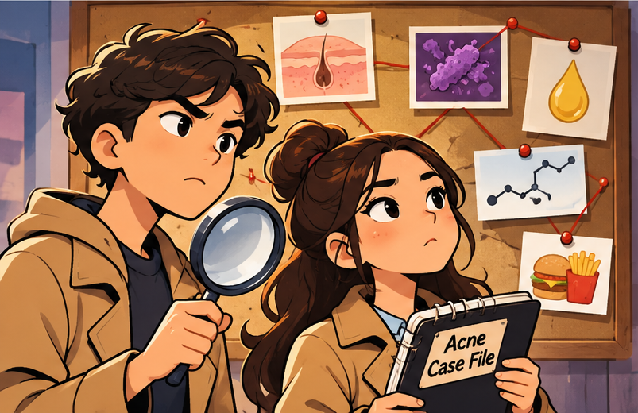
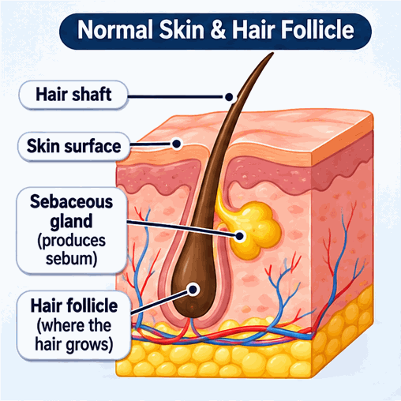
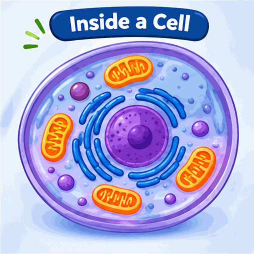
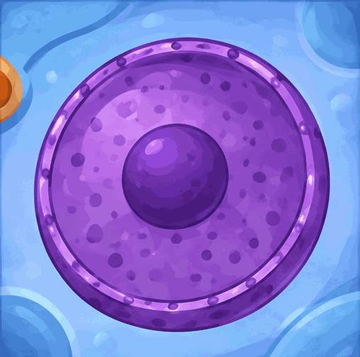
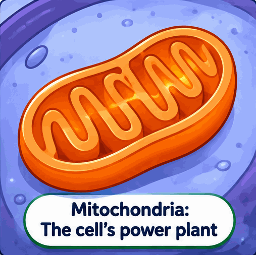
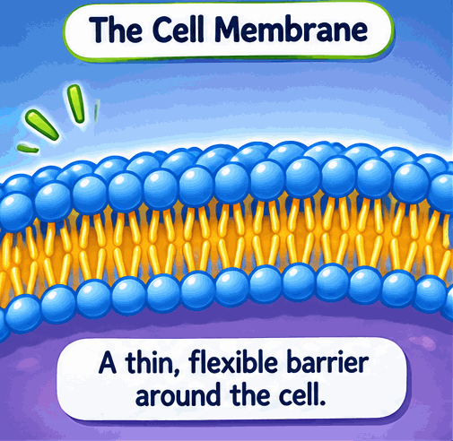
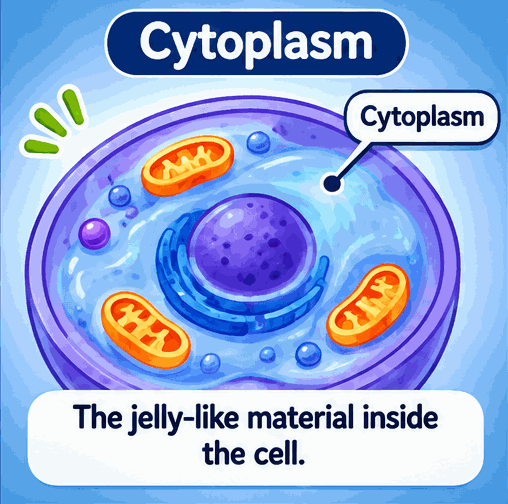

Open the case
A tiny structure in the skin becomes blocked. The area may become red and swollen. What could be happening?
📁 Case 001: The Mystery Begins
Follow the illustrated evidence. What clues could explain why acne develops?




Clue A: Sebum
An oily substance made by sebaceous glands. It helps keep skin and hair from drying out.
Clue B: Skin cells
Skin cells are continually replaced. Dead skin cells can collect inside a hair follicle.
Detective question: Where does acne commonly begin?
Investigate the skin
Skin is an organ made of different tissues. A hair follicle is a small tube-like structure that extends down into the skin.

Normal skin and hair follicle: identify the hair shaft, skin surface, sebaceous gland, and hair follicle. Choose a structure below to investigate.
Tap a structure to inspect it
Quick check: Which structure makes sebum?
🔬 Virtual Microscope Laboratory
Welcome to the microscope station! Study the skin diagrams, magnify the view, and collect three tissue clues. This is a simplified learning microscope using illustrations, not a real microscope slide.

Tip: Move the magnification slider to zoom in. Switch slides to compare tissue structures. Magnification values describe the on-screen zoom only.
🕵️ Find three microscope clues
Select each structure to record its scientific role in your detective notebook.
Enter the cell lab
All living tissues are made of cells. Cells have smaller parts called organelles, and each part has a job.

Explore the cell parts

Nucleus
The nucleus stores genetic information (DNA) and helps direct cell activities.

Mitochondria
Mitochondria release usable energy from food so the cell can do its work.

Cell membrane
The cell membrane surrounds the cell and controls what enters and leaves.

Cytoplasm
Cytoplasm is the jelly-like material inside the cell where many activities happen.
Cell-part matching challenge
Choose a cell part, then choose its correct job. Match all four pairs.
🧩 Repair the Cell: Science Lab Challenge
The detective's cell model has four missing labels! Choose a component card, then click the matching numbered location. You can also drag cards into the locations.
Component cards
Select one, then choose its location.
Follow the clues: How acne develops
Acne develops in the pilosebaceous unit: the hair follicle and its attached oil-producing sebaceous gland.

Put the clues in order
Choose the order that best describes one common pathway. Real acne is complex, and not every spot follows exactly the same pattern.
🧪 Build-a-Pimple Simulator: The Follicle Experiment
Detective mission: Explore how oil (sebum) and dead skin cells can collect inside a hair follicle. Move the sliders to change this simplified model, then solve the science challenge.
With little material collecting in this model, the follicle opening remains clear.
Remember: Acne is not caused by poor hygiene. Hormones, skin bacteria (Cutibacterium acnes), and the body's inflammatory response can also play roles. These sliders do not predict anyone's skin.
Gold dots = sebum · Purple dots = dead skin cells · Red shading = possible inflammation in the model
🕵️ Detective Checkpoint
Which statement best explains how a blocked hair follicle can develop?
Healthy vs. acne-affected skin

Compare the follicle and surrounding tissue.
Skin tissue illustration
Look for layers and structures that make up the skin.
🔐 Crack the Code
Detective, a research file is locked! Solve four science clues to uncover the four-digit access code.
Secret access code
Clue 1 of 4
Final detective challenge
Classified Case File
Complete Mission 5 to discover the secret access code, then enter it below to unlock your final challenge.
You have gathered the clues. Answer all five questions to close the case.
Case closed, Detective!
You explored skin structures, learned about cells, and investigated how acne can affect a hair follicle and nearby tissue.
ACNE DETECTIVE • JUNIOR HISTOLOGY INVESTIGATOR